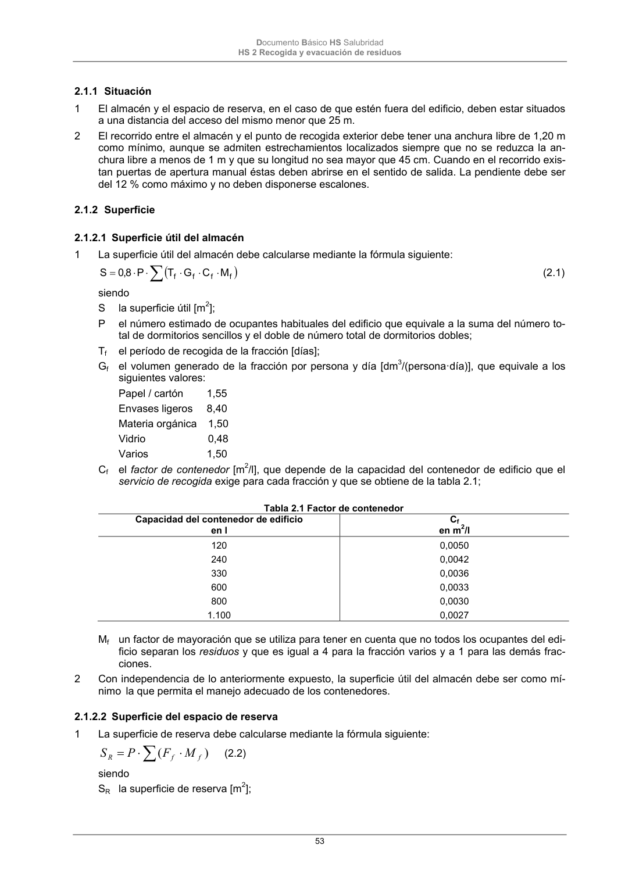
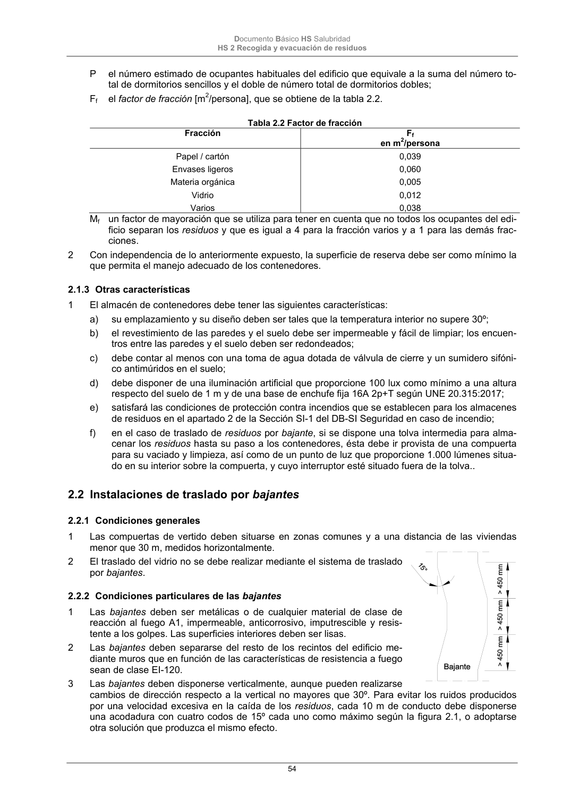

DB-HS · 2.1.2.2 Superficie del espacio de reserva · versión 2022-06-14 · capa oficial
Formatos: JSON compacto · Markdown · PDF fuente
Ámbito del documento · texto del ámbito · documento y tablas
ID técnico a0127 · PDF pág. 53-54 · jerarquía no validada por persona · contrastado con el literal de la página 53 (candidato tipográfico); no validado por persona · padre: raíz
2.1.2.2 Superficie del espacio de reserva 1 La superficie de reserva debe calcularse mediante la fórmula siguiente: ) ( f f R M F P S (2.2) siendo SR la superficie de reserva [m2]; Documento Básico HS Salubridad HS 2 Recogida y evacuación de residuos 54 P el número estimado de ocupantes habituales del edificio que equivale a la suma del número to- tal de dormitorios sencillos y el doble de número total de dormitorios dobles; Ff el factor de fracción [m2/persona], que se obtiene de la tabla 2.2. Tabla 2.2 Factor de fracción Fracción Ff en m2/persona Papel / cartón Envases ligeros Materia orgánica Vidrio Varios 0,039 0,060 0,005 0,012 0,038 Mf un factor de mayoración que se utiliza para tener en cuenta que no todos los ocupantes del edi- ficio separan los residuos y que es igual a 4 para la fracción varios y a 1 para las demás frac- ciones. 2 Con independencia de lo anteriormente expuesto, la superficie de reserva debe ser como mínimo la que permita el manejo adecuado de los contenedores.


PDF fuente redistribuible: copia fiel enlazada en esta página (SHA256 verificado).